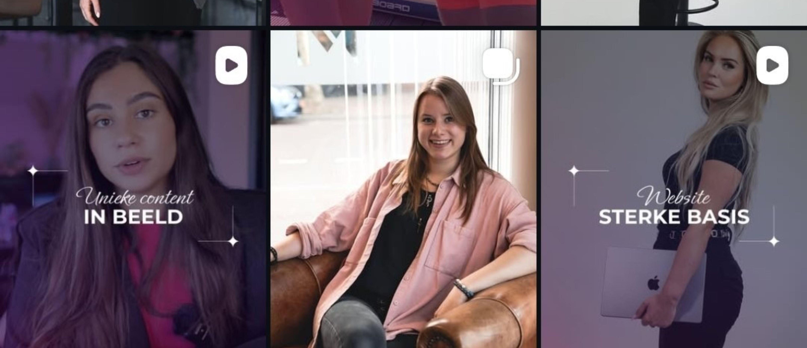

During my four-month graduation internship at Fit4Marketing, I worked on creating social media content by filming and editing educational videos. I transformed longer recordings into shorter, engaging videos.
Development Progress
Click the image to zoom in.
Initial Design
The goal was to create accessible and engaging social media content from the company's educational videos. Together with the team, I helped film these videos, which covered various topics related to the company's expertise and services. To keep the workflow organised, I maintained a daily task overview, tracking how many videos needed to be edited and which video belonged to each content series.
Click the image to zoom in.
Development
After filming, I reviewed the recordings and selected relevant sections that could stand on their own as shorter videos. Using CapCut, I edited the footage into multiple social media clips, focusing on pacing, clear storytelling and keeping the content engaging with zoom-ins, sound and icons. This also allowed me to become familiar with a new editing tool and develop my video editing skills further.
Results
The final result was a collection of short-form social media videos created from the original educational recordings. These videos made it possible to share the same information in smaller, more accessible formats across the company's social media channels.
Reflections
During this internship, I gained practical experience in video production and social media content creation. I learned to work with CapCut, improved my editing skills and gained a better understanding of how longer video content can be repurposed into shorter formats. It also taught me how to approach video content with a specific audience and platform in mind.